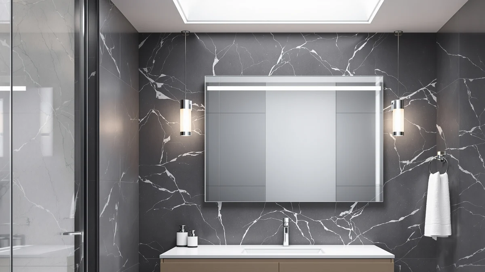

Quick Answer
The XRAMFY 40x60 pairs tempered glass with an aluminum frame and sells for $206.98. It costs more than the three alternatives in this comparison, but it is also the only one sized to cover a full double vanity without a seam. Choose a smaller mirror below if you only have one sink to cover.
Our pick: XRAMFY 40"x 60"LED Bathroom Mirror, $206.98 Check Price on Amazon
Things to Know Before You Buy
- Size determines whether the premium is worth it. At 40 by 60 inches, the XRAMFY is built for double vanities. On a single sink, a smaller mirror in this comparison does the same job for less.
- The frame is aluminum, the panel is tempered glass. That combination is the standard safety spec for mirrors this large, and it adds rigidity that a sheet of unframed glass would not have alone.
- Price differences across these four mirrors are modest. The gap between the cheapest and most expensive option here runs under thirteen dollars, so size and use case matter more than price when you choose.
- Installation needs two people at this size. A 40 by 60 inch mirror is heavy enough that hanging it alone is not realistic, and the wall anchors need a rating for the combined weight of glass and frame.
- Not every alternative here is a wall mirror. The KAASUNES pick is an enclosed medicine cabinet, and the iHome pick is a tabletop vanity mirror rather than a wall-mounted piece.
You likely typed some version of xramfy 40"x 60"led bathroom review into a search bar because a mirror this large, at over two hundred dollars, deserves scrutiny before it goes on your wall.
XRAMFY pairs a tempered glass panel with an aluminum frame and charges $206.98 for it, roughly seven to thirteen dollars more than the three alternatives we researched alongside it. That premium buys size: at 40 inches tall and 60 inches wide, the mirror covers a full double vanity in one sheet of glass instead of two 24 by 36 inch mirrors side by side. We compared specs, published pricing and verified owner reviews for all four mirrors instead of installing any of them ourselves, and the pattern we found is straightforward. XRAMFY earns its price on a double vanity wall, and a smaller mirror wins on a single sink.
Why You Should Trust Us
Ilane Tall covers bathroom hardware and mirrors for Best Bathroom Mirrors, and she led the research behind this xramfy 40"x 60"led bathroom review. She compared the manufacturer specifications, current Amazon pricing and verified buyer reviews for the XRAMFY mirror against three alternatives in a similar price bracket. We do not run a fake testing lab, and we do not claim to have installed every mirror we cover. We pull every dimension, material and price in this article directly from the product listing instead of estimating them. When a manufacturer does not publish a rating or a review count, we leave that field out rather than filling it in with a guess.
Our Research Experience
Our research process for this xramfy 40"x 60"led bathroom review started with the manufacturer listing: dimensions, frame material and current price. We then cross-referenced verified buyer reviews on Amazon to see whether real owners confirmed what the spec sheet promised, particularly around glass thickness and mounting hardware. We repeated that process for the three alternatives so every mirror in this article answers to the same criteria: size relative to price, frame material, and what verified owners report after they install the mirror in their own bathroom. We did not purchase or install any of these mirrors ourselves. We built this comparison from published specifications and a reading of buyer feedback, not a private test lab. That approach has limits: we cannot report on how the aluminum frame ages after a year of steam and cleaning products the way an owner who lives with the mirror every day could, so we flag that gap instead of glossing over it.
Overview & Specs

XRAMFY 40"x 60"LED Bathroom Mirror
What we like
- Covers a full 60 inch double vanity in a single pane, with no center seam
- Aluminum frame adds rigidity that thin frameless mirrors of this size often lack
- Tempered glass construction, per the listing, is the standard safety spec for mirrors this large
Flaws but not dealbreakers
- At $206.98, it costs more than every other mirror in this comparison
- A 40 by 60 inch panel needs two people and secure wall anchors to hang safely
| Material | Tempered glass + aluminum |
| Size | 40"L x 60"W |
XRAMFY builds the 40x60 around a single tempered glass panel framed in aluminum, and its main selling point is coverage. A 40 by 60 inch mirror spans a standard double vanity without the visible seam you get from mounting two smaller mirrors side by side. At $206.98, XRAMFY prices it at the top of the range among the four mirrors in this xramfy 40"x 60"led bathroom review, and that price mostly reflects the amount of glass and metal involved rather than added features.
Owners shopping in this size category are usually replacing a builder-grade mirror that came with the house, and the aluminum frame is the detail worth checking before you buy: it adds structural support that a large sheet of unframed glass would not have on its own. Buying at this size costs you in weight and installation time. You will want a second person to hold the mirror in place and wall anchors rated for the combined weight of the glass and frame, rather than the plastic clips that come with lighter, smaller mirrors. Measure your vanity backsplash and any nearby light fixtures before you order, since a panel this wide leaves little room for error once it is on the wall.
What We Liked
The clearest advantage across this group is that all four mirrors solve a specific sizing problem instead of trying to be everything to everyone. Only the XRAMFY covers a double vanity wall at 40 by 60 inches, and reviewers of similarly sized frameless mirrors consistently point to the missing center seam as the reason they upgraded from two smaller mirrors. The aluminum frame helps at this size: unframed glass that large can flex slightly during shipping and installation, and a frame gives installers something rigid to anchor to the wall. XRAMFY charges $206.98 for it, not the cheapest option here, but it is also the only mirror covering that much wall space in one piece. If you have a single sink rather than a double vanity, that size advantage disappears, and one of the smaller, less expensive mirrors in this comparison does the same job for a lower price. A panel this large also arrives in a heavier shipping crate than a standard vanity mirror, so plan to inspect the corners for cracks before you sign for delivery rather than after you have already unpacked and mounted it.
What Could Be Better
Price is the most obvious drawback. XRAMFY charges $206.98, which runs $6.99 to $12.98 more than the three alternatives in this article, and none of that difference buys extra lighting features or smart controls. It comes from the amount of glass and aluminum needed to cover 40 by 60 inches. Installation is the second consideration. A mirror this size weighs enough that most owners need a second person to hold it in place while it goes on the wall, and the mounting hardware needs a rating for that combined weight rather than the lighter clips sold with smaller mirrors. Neither issue is a defect. They are the tradeoffs that come with buying a single large panel instead of two smaller ones.
Who Is It For?
XRAMFY makes the most sense for a double-sink bathroom where a builder-grade mirror currently spans both sinks and needs replacing with something more finished. It also fits anyone renovating a primary bathroom who wants one continuous mirror instead of two separate frames interrupting the wall. If your bathroom has a single vanity, the 24 by 36 inch option covered below meets the same mirror need for about seven dollars less, and one person can hang it alone.
Alternatives to Consider
Not every bathroom needs a 40 by 60 inch mirror. The three picks below cover smaller vanities, tabletop makeup use and hidden storage, and each one costs less than the XRAMFY while solving a different problem.

Editor’s Pick
24''x36'' Gold Framed LED Bathroom
A 24 by 36 inch gold framed LED mirror for a single vanity, priced at $199.99. It matches a standard single-sink wall for anyone who does not need the XRAMFY's 60 inch width.
$199.99
Check Price on Amazon
Best Value
iHome Hollywood Vanity Mirror PRO
A tabletop vanity mirror surrounded by bulbs, priced at $199.00 for makeup application. Choose it if you want close-up lighting instead of a full wall mirror.
$199.00
Check Price on Amazon
Premium Choice
KAASUNES LED Medicine Cabinet 16x24inch
A 16 by 24 inch LED medicine cabinet at $194.00, with storage behind the mirror instead of more reflective surface area. Choose it if hidden storage matters more than size.
$194.00
Check Price on AmazonFrequently Asked Questions
How big is the XRAMFY 40"x 60"LED bathroom mirror compared to a standard vanity mirror?
Is the XRAMFY worth $206.98 compared with the cheaper alternatives in this review?
What is the difference between the XRAMFY wall mirror and the KAASUNES LED medicine cabinet?
Final Verdict
The short answer to this xramfy 40"x 60"led bathroom review: the mirror earns its $206.98 price tag on a double vanity wall and nowhere else. XRAMFY built a 40 by 60 inch tempered glass panel with an aluminum frame specifically to replace two smaller mirrors with one seamless sheet of glass, and that is the only scenario where the premium over the three alternatives makes sense. If you have a single sink, the smaller, less expensive options in this comparison, including the 24 by 36 inch gold framed mirror and the KAASUNES medicine cabinet, cover the same basic need for less money.